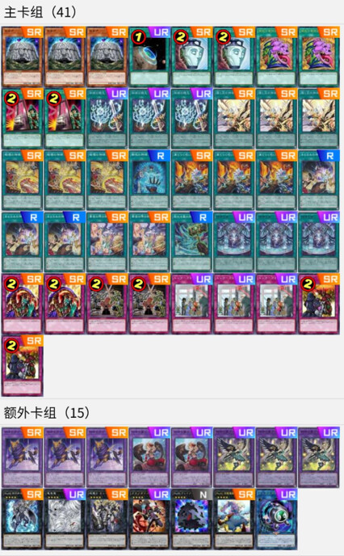
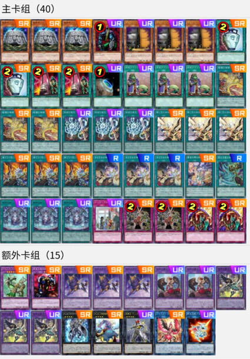
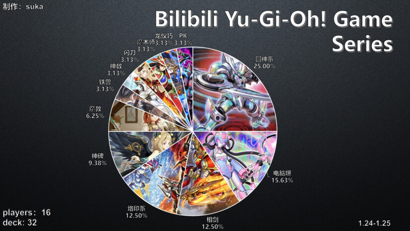
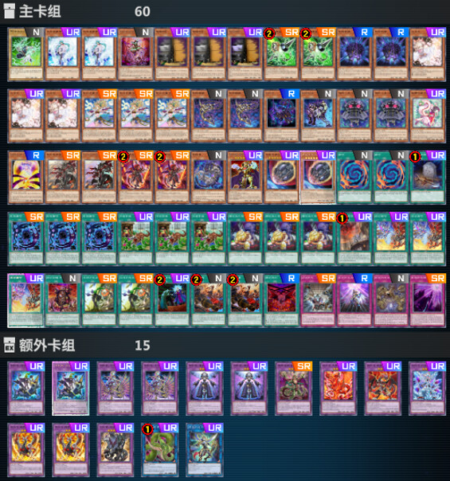
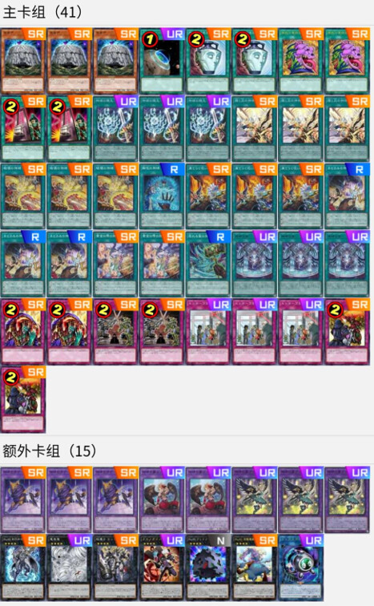
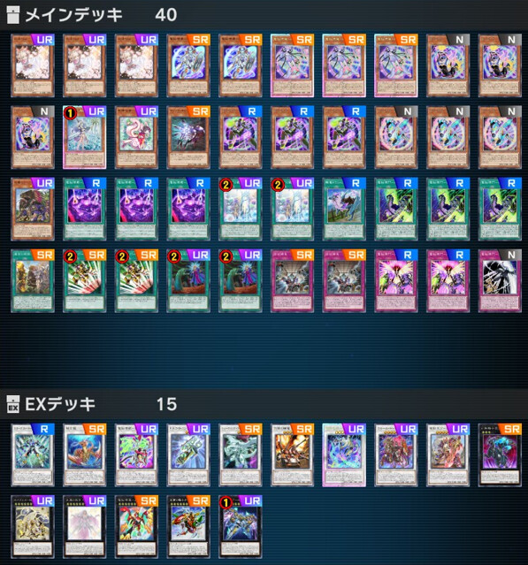
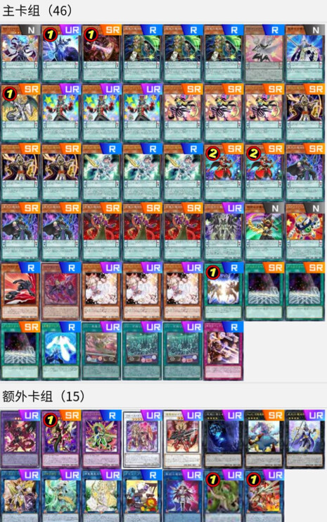
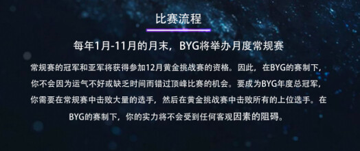

【游戏王MD】没人教你的游戏王大赛经验！
这篇文章有很好的介绍MD各个赛制应对方式及相关组卡，尤其是猝死战相关内容值得大家学习
前言
大家好，我是suka。我是一名游戏王MD的活跃牌手，同时也是BYG的主办方之一。
本文将会结合两届游戏王MD大赛Bilibili Yugioh Game(BYG)的赛事数据，分享我的游戏王MD比赛经验以及对环境理解。同时，我会列举出环境中竞技卡组的推荐上位构筑，帮助你在MD中组出优秀的卡组。
不仅如此，你还会学到：
1.瑞士轮神碑玩家如何防止对手拖猝死
2.被高估以及低估的卡组
3.大赛玩家如何选择卡组
我在翻阅往期数据的时候找到了很有趣的发现。在最开始的神碑构筑下，神碑是一个标准的水百系展爆卡组，其中最劣势对局是随风旅鸟/海晶少女！

但是水机禁止，神碑构筑成熟之后：

神碑为了复仇一定是偷偷练了禁忌的武林秘籍！！

如果你喜欢我的文章，欢迎关注我的B站账号 ai笑滴suka
B站空间链接 https://space.bilibili.com/66961410 144
我会发布比赛录播，有着各种精彩竞技对局。
猝死战规则怎么打
由于很少有文章解释过猝死战应该如何决斗，因此这部分将解析猝死战该怎么打。
无论是线上还是线下比赛，对猝死战/加时赛的把控都很重要。
什么是猝死战规则
BYG的瑞士轮猝死规则参考于游戏王官方的YCSJ比赛。YCSJ官方规则在比赛开始的第25分钟后，未完成对局的双方会双败。由于线上交流有一定延迟，双方玩家不方便协商，线上赛并没有采用双败制的先例，所以根据官方25分钟可以结束BO1比赛的思路，把25分钟设定成猝死时间，并给玩家5分钟缓冲时间进行判局。
关于神碑玩家如何应对对手拖时间
我的答案是从构筑和打法上下手。找裁判始终算是场外招，场外招不一定有用，所以最好在构筑上以及打法上着手。虽然打不满25分钟是最优解，但是也要做好猝死打赢的准备，随时准备立小男孩，只要对手血量不优势就不会拖猝死了。
神碑容易被拖进死三/猝死，不代表神碑打比赛劣势。
我们以BYG两套不同构筑的神碑为例。

(7-0神碑)

(5-2神碑)
以上构筑分别是瑞士轮7-0神碑和5-2的神碑。可以看出来双方有明显不同的地方。瑞士轮第一的构筑采用了吸毒壶，而另一位则采用了成金和恶魔科学怪人。虽然在天梯上恶魔科学怪人和成金哥布林并没有太大问题，但是这是比赛，有猝死战。
神碑卡组众所周知很难抢到血，开一次成金或者怪科，对手血量优势绝对会往猝死战上拖。
而第一名的0成金三贪欲构筑追求速杀，可能也有注意使用小男孩回血，防止对手打猝死战获胜。他在瑞士轮中没有进过一次猝死。而5-2的构筑他在最后一轮猝死战中输给了魔术师，比赛录像我也有看，虽然他开局使用恶魔科学怪人特招出木龙兽，也用木龙兽把对面血线压到3000以下，但是他自己开出来两张成金。。。。。。他对手全程基本没出牌就赢了。
所以，会改变生命值的卡尽量少用。我一个实卡很强的玩家他也用神碑打瑞士轮，最后5-2饮恨，他私下找我复盘，运气不好，遇到60卡组，不敢随便开JC支付一千血，绝对会进猝死，不然也不会输。很多经常打比赛的玩家很多都有这个意识，我天梯神碑构筑中加入了一张黄金卿，这里我非常推荐这卡，可以自解贴纸站出来打3500，所以这卡给神碑用就是一张打猝死非常厉害的卡。在线下比较极端的比赛构筑中，还存在用DD炸弹防死三的打法，并且还拿了巡回赛冠军。
如何在MD内拿到猝死战的优势
虽然大部分对局都会在10分钟以内解决战斗，但是也有一些容易进猝死的对局（例如影依内战）。在一般的对局中，双方是以一个相对公平的状态进入猝死。
但尽管如此，猝死战在以下情况会为其中一方提供相对更有利的局势。
优势一：进入猝死战最后一回合的人
可是进入猝死的最后一回合的人往往是有利方，所以如何保证自己能够拿到主动权是最重要的。假设一方剩余时间不到90秒那么他能进入猝死回合的时间为23：30，而另一方节省时间，有180秒，则他进入猝死的时间为22分钟，他有进入猝死的优先权。
优势二：保留时间较多的人
在双方均势时，打猝死是保留时间较多的一方有利。由于一回合时间上限是300，所以得出比赛开始到了20分钟就会进入危险期。前几回合就要考虑如何将时间最大限度的保留。大概时间为比赛15分钟开始准备保留时间为打猝死做准备，而到了20分钟之后比赛就成了试胆竞速了。理想情况下，自己回合操作一波不计代价抢血，回合结束时正好猝死时间到这就是最优解。
猝死战 对局判例
以我印象比较深的一个判局为例，骚灵VS召唤师。
原本骚灵方场面大优势，但是血量差距一直都没有拉开。可是骚灵方在15分钟的危险期的时候，长时间思考了很久，回合结束时正好接近20分钟。因此机会来到了召唤师方，他手里正好抽到能抢血突破的牌，于是不计代价抢了不到的500血。因此，召唤师以200的血量优于骚灵，用光车丢手里保留的阿莱斯特，压制住了骚灵神抽的雨衣精弹后场协议，导致骚灵方无法抢血输掉了对局。
本来如果骚灵再加一回合就可以协议带康跳faker终结比赛，可惜没有如果。打比赛嘛，经验累积很重要，复盘分析自己败因下次不会再犯就好了（如果在将对局详情发送至动态B站并@ai笑滴suka我会尽量像这个一样做分析对局）
如何有效利用MD的思考时间
不过说到思考时间，我这里会分享一下如何有效利用思考时间的技巧和建议。希望大家不会因为自己在不合时宜长考导致自己比赛死三输。
关于不同操作分支的抉择
根据个人经验，其实熟练度到达某种程度之后基本上思考30秒到60秒就行了，剩下的时间往往时各种操作分支的选择，是无用选择，特别是比赛紧张的时候，越紧张越思考越容易出事，我建议这种情况相信直觉，一咬牙是输是赢一头撞死就好了，想的越多越容易输。
关于对手思考时间的运用
因为展爆卡组大多比较复杂，很多人就算学会了都觉得时间不够。这里我给的建议是在对手思考的时候也同时思考自己怎么展开。而不是把注意力集中在对手如何展开这边，展开卡组不同于beat卡组，他只需要运营自己就行了，对手如何展开不关我事，只需要想着怎么突破就好。就算是现有的牌不足以突破，这里就需要思考第6抽需要抽什么才能突破。真抽到了直接就开始展开就好了，思考时间充裕都是一分一秒节省下来的。这个技巧如果用的好，在水平比对手高的情况下很多时候就可以给对面操作压力。
举个例子，玩spy这类复杂卡组，对手需要想的时间比自己需要思考的时间要长，就可以一直在对手思考的时候思考过阻抗，用对手的回合时间思考，自己的回合时间就可以全部用于操作，这样就可以节约出大量的思考时间，玩起来就比较充裕，而且这种打法可以有一个好处，对手思考跟不上自己，就根本无暇顾及时点问题，于是就可以更好的运用读时点的操作，这也是玩SPY这类冷门复杂展爆的优势，对手若不是熟知这个卡组，思考压力是很大的，特别是比赛中，本身就会紧张，那么对手犯错率就会提升，这种心理上的优势是玩相剑这类简单卡组是比不了的。
当然，如果对手是同水平熟知这种卡组的玩家就不会有用，很多高端玩家认真玩的时候喜欢关时点就是这个原因。不给对手展开卡组需要思考的时间，然后在最正确的地方冷不丁交上阻抗。如果对手心理素质差，往往会自乱阵脚，操作变形。不过也需要比对手想的快或者同样快才能达到这样的效果。操作很强，思路明确的牌手往往就能从心理上击溃对手。这个是闪刀姬玩家的必修操作，心理战赢了，很多会输的局都有赢面。
淘汰赛征服制选卡组思路讲解
所谓征服制BO3，是指必须两副卡组必须分别赢一次才能获胜的赛制。很多人习惯打BO3换side，但是因为考虑到MD换备需大量的时间并且容易出错，所以才选择了更适合BO1的征服制赛制。
征服制因为有两副卡组，所以就可以使用田忌赛马的战术回避掉对自己不利的点。这里我就分享一下我的个人理解，新表的梯度表暂时不放出来，尽请期待，以下是本次比赛的征服制环境饼图

征服制和bo3side的最大区别的就是玩法有点类似于斗兽棋。采用合理的战术，善用卡组之间存在者明显的克制关系，就可以获得理论上的优势。
例子：假设我方黄金国+闪刀姬对上对手任意卡组+相剑，G1对手胜利，剩下的相剑将会面临者G2打黄金国后手，G3打闪刀姬这种克制关系明显的卡组，虽然拿下G1，但是相剑方理论上是劣势的。
木桶理论：木桶能装下多少水取决于木桶最短的短板有多长，如果说两副卡组都能针对死对手的一副卡组，那就可以获得战术上的优势，如何让自己方的短板卡组获胜就成了征服赛制需要着重思考的问题。
这里我提出以下征服赛制战术思路
1.更换卡组的出场顺序
把劣势卡组出场顺序变更，回避掉最劣势的那个点，如果劣势卡组赢了，那就不用面对更劣势的对局，必要情况也可以把劣势卡组放在G2的先手位上，让劣势卡组用先手优势拿下对手，用首发卡组打G3后手，很多时候比G3打劣势卡组打后手赢面大。
2.找准定位加强卡组的针对性
我看到很多牌手在二发卡组的构筑上带了神碑的针对，这其实是一个误区，针对神碑卡组是首发需要干的事情理由我后面会说，征服制不需要2-0带走对手，二发卡组与其考虑如何后手赢神碑，不如考虑如何增加G3先手获胜的概率
3. 找准卡组定位
首发卡组的目的是拿下稳定拿下先手的对局，任何的先手卡组都是一个合格的首发，而真正需要讲究的是二发卡组，G3使用二发卡组无疑是压力最大的时候，所以，二发卡组不但需要一定的后手能力，还需要自己的自信以及熟练度，拿替补打生死局确实不太靠谱。
征服赛制 卡组梯队分析
首先声明：因为游戏王是人玩卡组，所以厉害的绝活玩家无视版本，玩什么自己顺手就好，这里只是给大家卡组推荐而已，以下是我个人认为的淘汰赛梯度表。
T1
斩机码语者
这个MD版本神只有一个，那就是圆武。
圆武由于不占通招点展开弥补了码语者卡组通招被炸就无法手牌展开的致命缺点，让码语的突破能力直接上升了一个档次

在BYG月常规赛中魔法师Cks使用斩机码语者获得冠军，他使用的是一套比较倾向码语的构筑，投入了宇宙旋风以及魔封的芳香针对神碑首发，微码既可以通过挖矿检索圆武来进行斩机的展开，所以斩机和码语相性非常高
烙印
上个版本的神，同样可以首发可以二发，但是这个版本被神碑克制的太惨了所以评价有所降低，不过由于征服制神碑稳定会去首发，打二发玩死三多半玩不过烙印，在不考虑神碑这个除圣卡组之后，烙印强度瞬间就上来了

在BYG月常规赛中魔法师Cks使用60烙印影依获得比赛冠军，在征服制中，需要使用两副卡组，这是他第二副卡组，比较标准的60影依构筑，在主卡中，投入了颉颃胜负和黄金国巫妖以及额外的混沌战士来进行针对神碑，黄金国巫妖可以通过烙印融合堆下墓，并且可以去除神碑后场，是一张非常实用的多功能牌，而带抗性的混沌战士神碑只能依靠系统外处理，
在混沌战士出场后，如果没有技能抽取，神碑就会进入混沌战士直击是否挡刀的两难的境地。
龙辉巧
英雄迟暮，已经没有未来了，这里就不细讲了，在征服制中，先手稳的卡组是可以无脑选的，第一届我和名前淘汰赛都选择了了龙辉巧，第二届ID为雷电将军的牌手一路使用龙辉巧先手硬币杀进半决赛，就算G1赢不了G2基本也可以稳定吃分，不过现在K社现在直接进行一个死刑宣判，虽然天梯还是能玩，但终究只是达到三流水准。

T2
闪刀
天梯的CJB卡组，但是闪刀是战术性卡组，在征服制的淘汰赛，闪刀可以回避掉一个不想面对的卡组，但是最好是二发，如果牌手把闪刀上限发挥出来，闪刀绝对T1级别的存在，这版本的强度主要体现在能够非常克制烙印，并且在所有竞技卡组中，闪刀是最适合后手的卡组之一，还可以搭配很多战术，最重要的淘汰赛的都是主流狗，一般不会被莫名其妙的卡组打的怀疑人生。
举例：碑+闪刀打斩机+烙印，假设就算G1碑输给斩机，那么剩下的烙印将会与神碑和闪刀对决，虽然闪刀方容错率相对比较低，但是碑和闪刀两场打烙印都是理论上优势对局，让一追二的概率也不小，所以只要好好调整构筑，找好定位，闪刀会非常强，不过闪刀如果遇到那种两副卡组全部都克制闪刀的情况同样会非常劣势，所以是否选择闪刀还是得看出轮名单预测环境。

本届比赛中，小漫鼠使用闪刀进入了16强，由于比赛中码语出奇的多，他使用的构筑和以往的闪刀不同，放弃了无限泡影，将泡影变成了对码语杀伤力更大的陨石兔子以及屋敷童。
神碑
神碑在征服制中，绝对是一个被高估的卡组，虽然瑞士轮有神碑获得了7-0的战绩，但是征服制下，不是需要神碑一副卡组赢了就是了，神碑卡组本身有巨大缺陷，首先，神碑死三劣势这个点导致它不可能作为二发卡组，神碑的出场是固定首发，尽管首发不怕对手拖死三，但是明牌和对手打，首先在战术层面上就先输一筹。
固定首发位就意味着对手不会拿打神碑劣势的卡组跟你打，打不到优势卡组，神碑的战术价值直接减半，而神碑在后手遇到展爆的大多数情况下都是待宰羔羊，若对手直接使用克制神碑的卡组甚至无法反制，虽然这次淘汰赛神碑只出轮了三个，但是一共收到了5副主卡针对神碑的电脑堺卡组，所以不出意外。神碑打到淘汰赛就直接没声音了，这就是神碑在征服制当中的局限性。
但是，作为首发卡组，神碑强度还是合格的，虽然拿下G1没有那么容易，但是也是能稳吃一分，本身卡组强度是在T1，瘦死的骆驼比马大，就是这个道理。
同时我也思考了一下相对应的战术体系
举例：神碑+死三刀
神碑因为对局时间较长，所以可以二发闪刀姬。让闪刀G3开局打死三，总所周知，闪刀在死三卡组中算数一数二的一类了，如果再配合死三牌会非常强，但是缺点是，假设对手识破了你的想法那么这个战术可能就失败了，不过正常打闪刀作为二发也会很强

本次比赛中鲁连清使用神碑在瑞士轮中打出了7-0的好成绩，因为环境中热门卡组码语斩机非常害怕御前试合所以他多带了两张，取而代之的是增殖的G被他剔除了构筑，在构筑中他投入了强欲而贪欲之壶来压缩卡组，让卡组能更快的进入循环，并且比常规构筑多带了一张黄金之雫，激进的构筑让他对手都没活到猝死。
旅鸟
旅鸟和闪刀的区别在于虽然都是烙印系的对策卡组，旅鸟的后手能力不如闪刀，并且如果作为二发卡组那么旅鸟打烙印就失去了最大的武器：卡组信息差，假设G3烙印先手，烙印先手拍融合，肯定不会做冰箭龙而是做犀角龙+追放，依旧可以大概率压制旅鸟，所以针对性方面不如闪刀，不过旅鸟能优开60挂影依的那种烙印，这点闪刀做不到，而且旅鸟先手展开后的强度也高于闪刀，总的来说是有优势也有缺陷。（第一届的旅鸟构筑找不到了）
电脑堺
BYG第二届的黑马卡组，只因出轮了三位神碑，搞得大家ptsd都犯了，于是收上来5副电脑堺，成功跻身淘汰赛饼图第二卡组（瑞士轮只有三副，电脑堺打赢了复活赛出线率高达166）在我认知里，电脑和闪刀相同，是一副战术性较强的卡组，克制旅鸟，克制闪刀，不算太怕斩机，最重要的是克制神碑，但是电脑堺的终端和卡手率造成了它的局限性。

本次比赛中，カンボジアの十六夜アキ使用电脑堺获得4强的成绩，他在构筑中完美展现了电脑堺的战术性，不带G带胜负还有抵消器，是一套专门针对神碑的构筑
魔救 魔术师 Spy
在征服制比赛中，展爆可以无脑选，主要首发卡组的目标就是稳定拿下一分，所以先手越强的卡组越适合首发，魔救强度主要在于矿友特有的手淘积木龙，简单粗暴能防陨石，所以是三副中热度最高的卡组，魔术师虽然是三个中最怕陨石的卡组，但是魔术师特有的红阵beat使魔术师的妥协能力是三副中最强的，spy先手能防陨，后手能掏滴，无效系抗性无疑是三副中最高的，不过最大的问题就是黑幻想还是憋着不出，卡手率比较高，我同盟车还没了，第一届我拿SPY首发就可以知道我对这个卡组的强度的认可，我当时spy个人战绩4-1，也就决赛输了一场。
但是三幅卡组都有瑕疵所以排在T2，以下构筑为本届8强卡组以及第一届的冠军秘旋谍

Allan715 魔救

梦辰娜 魔术师

Suka 秘旋谍
T3
相剑
这个卡组给我的感觉就像是在淘汰赛里凑数的，这次相剑在瑞士轮最好成绩是4-3，荣获CJB称号，继承了和OCG一样的填海特性，如果征服制对手卡组两副都打相剑优势，那么他打你优势，相剑卡组本身上限太差，就算是先手，在很多时候只能8+10等死，本身卡组比较差需要凭借牌手实力弥补。

比赛中Hibiki在淘汰赛使用相剑获得亚军，值得注意的是他主卡投入了两张锁鸟针对环境热门的斩机，以及在额外投入白斗气白鲸，白斗气白鲸拥有穿透攻击以及墓地无限诈尸能力可以快速击杀神碑。
梯度表就排在这里了，能出轮的基本都是主流玩家，所以排梯度方式和天梯不同，除了可以无视版本的绝活玩家，基本都是会选择环境最优解，能上镜的卡组要么是版本答案（烙印和斩机），要么就是有特别的战术价值（电脑堺，闪刀等）。
后言
欢迎关注我的B站账号 ai笑滴suka
空间链接 https://space.bilibili.com/66961410 144
我的B站视频包含了本次比赛录像。
同时，我也会经常直播游戏王MD对局或者比赛。欢迎关注！
特别鸣谢
比赛策划：suka，MyCard
赛后总结：星光pokeboy
饼图制作：suka
裁判：suka，鬼羊，东风寄千愁，17天，超级娱乐王，初六爷
奖品提供：NGA，suka，MyCard
Bilibili Yugioh Game 如何参赛
每年1月至11月期间的每月底，BYG将举办月度常规赛。常规赛的冠亚军可以参加12月的黄金挑战赛。
BYG比赛群：413093947
比赛群会公布月底的具体参赛时间，以及报名方式。